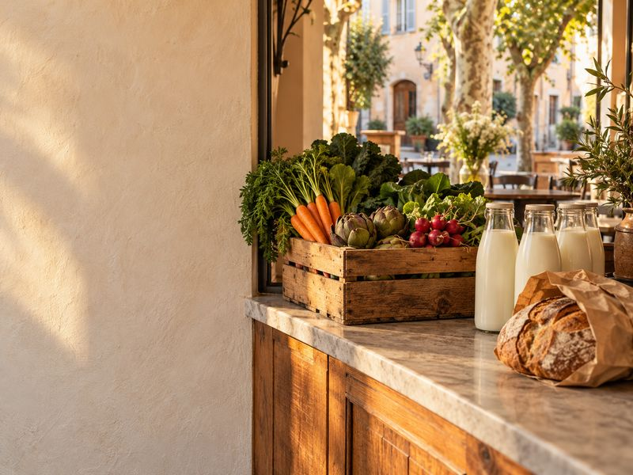
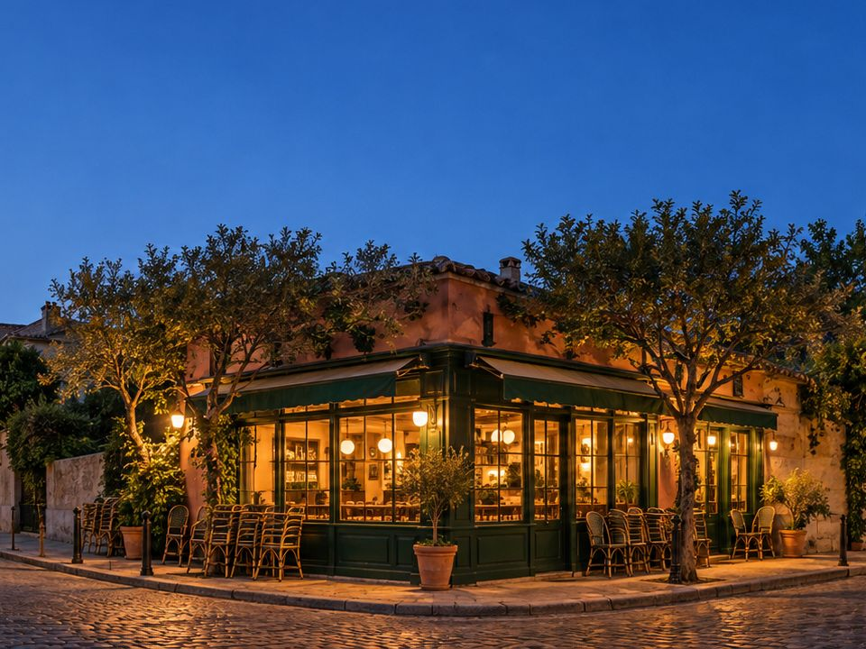
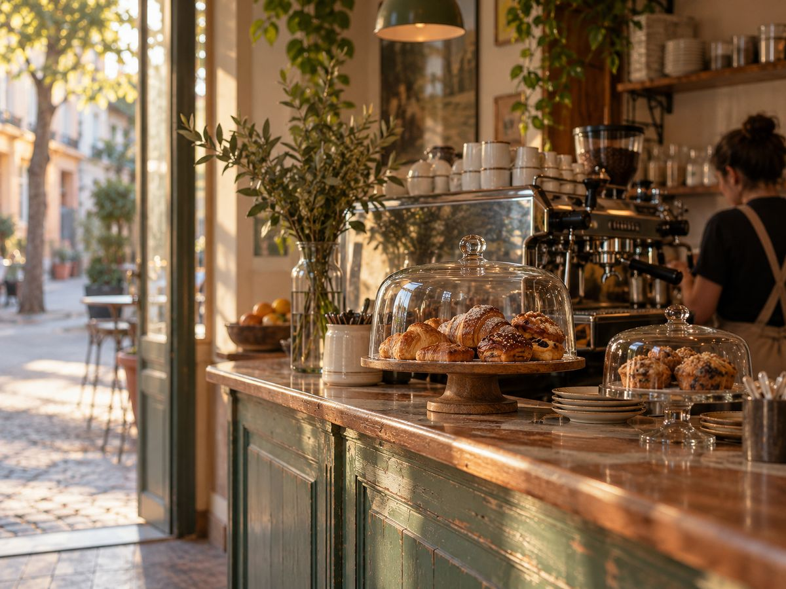

One shop
£29a month
- Invoices read from email and photos
- Stock and margins per item
- The weekly order, for you to approve
- Export to your accounts
Tidewell reads your supplier invoices, keeps count of the stock and drafts Thursday’s order. You look it over with a coffee and press approve.
Friday’s order is drafted
Placeholder: partner list to be confirmed before launch.
Why Tidewell
How it works
Tidewell works through the day in the background. You step in once, on Thursday night, to approve.

06:52
Forward the supplier’s email or photograph the paper note at the door. Every line lands with its price, and price rises are flagged.
11:20
Till sales come off what was delivered, so you know what’s left before you open the walk-in. Anything running short gets a date.

21:40
By Thursday night each supplier’s order is written from what you sell and what’s left. Nothing is sent until you press approve.
Margins

| Item | Price | Cost | Margin |
|---|---|---|---|
| Flat white | £3.40 | £0.74 | 78% |
| Oat flat white | £3.70 | £0.96 | 74% |
| Almond croissant | £3.20 | £1.31 | 59% −6 |
| Banana bread | £2.90 | £0.62 | 79% |
Two or three shops
| Little Quay | Market Row | |
|---|---|---|
| Oat drink 1L | 9 | 26 |
| Espresso beans | 3.2 kg | 7.5 kg |
| Croissants | 46 | 31 |
A week in Tidewell
A sample week at Little Quay Coffee, a fictional two-shop café. Every line is something Tidewell did on its own, except one.
Mon 5
9 invoices read
Matched to Friday’s deliveries
Tue 6
Oat drink up 6p a litre
Wed 7
Stock counted from till sales
2 items running low
Thu 8
Friday order drafted · £410.75
Approved by you
Fri 9
4 deliveries matched
Short: 6 × butter, credit asked
Sat 10
Croissants sold out
Bake count raised for next Saturday
Sun 11
Weekly note sent · margin 71.4%
Pricing
Both plans read every invoice, count every shelf and draft every order. Thirty days free, then monthly. Cancel any time.
£29a month
£69a month
Questions
Ask a person
Write in and someone who has done a stock count at eleven at night will reply within a working day.
hello@tidewell.exampleNo. Orders are drafted, never sent. Each supplier’s order waits for you to approve it, and you can change any line first.
No. Tidewell reads sales from the till you already use. The list of supported tills is still being confirmed (placeholder).
Photograph the note at the door. Tidewell reads a photo the same way it reads an emailed invoice, and asks you about anything it can’t make out.
Invoices and costs go to your accounting software each week, coded and matched to deliveries. Your accountant can also have their own login.
You choose a plan, or your account pauses. Nothing is charged until you choose, and you can export everything at any time.
Each shop keeps its own menu, recipes, stock and margins. Orders can still be combined per supplier and split at delivery.
Thirty days free. Setup takes one evening: forward an invoice, connect the till.